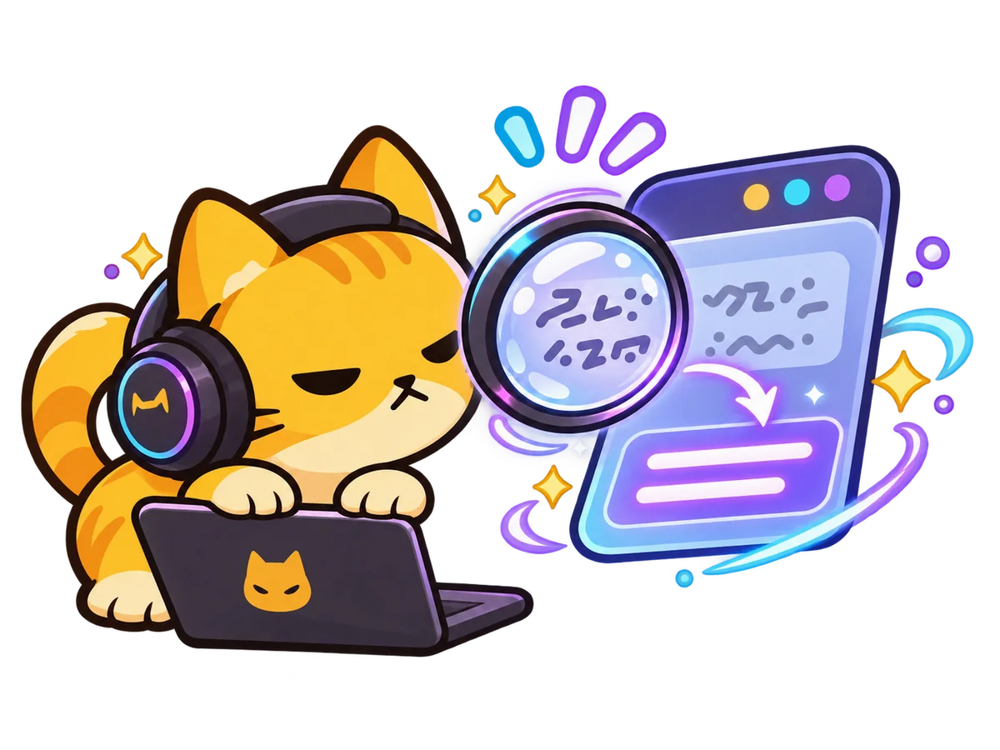

F6Modo Pantalla
Traduce lo que se lee en tu pantalla
Lee el texto visible con OCR y pone la traducción encima, justo donde está el original.
- Detecta si el texto ya está en tu idioma o no se puede traducir, y lo deja tal cual.
- Lectura de texto en 15 idiomas, incluidos japonés, coreano, chino, ruso y árabe.
- Traducción con OpenAI, o con Google y protección de nombres propios.